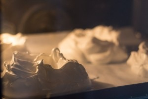
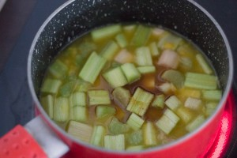
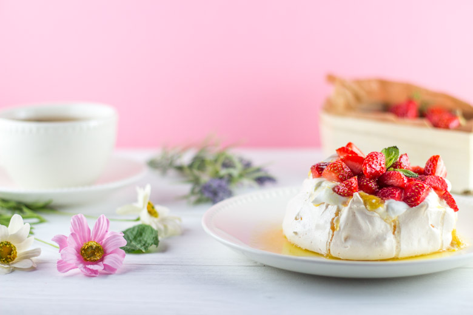
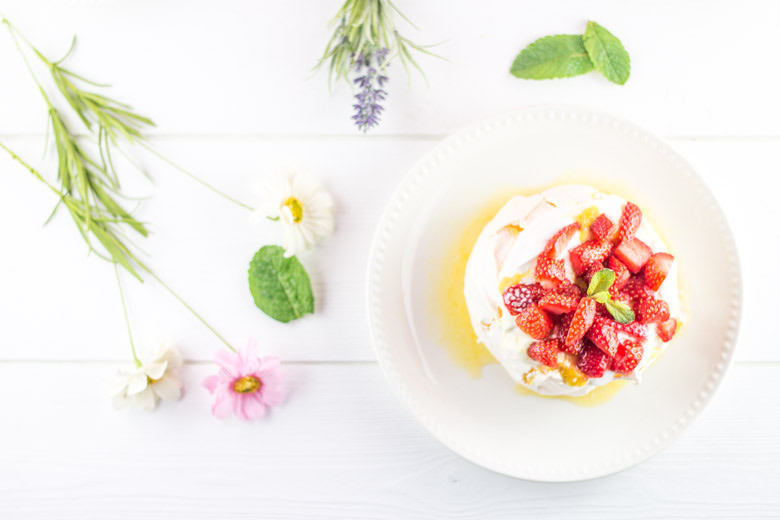

Pavlova fraise rhubarbe

Si vous êtes accros aux pavlovas cette recette est faite pour vous. Ici il s’agit d’une pavlova fraise rhubarbe qui est devenue un de mes desserts préférés. La toute première fois que j’ai entendu parler de ce dessert c’était il y a maintenant quatre ans et je m’en souviens encore très bien car le terme de « pavlova » m’avait marqué. En effet, il y a quatre ans j’étais encore sur les bancs de l’école et je m’étais fait une très bonne amie avec qui j’appréciais tout particulièrement discuter cupcakes, gâteaux et compagnie (entre autres car nous étions de grandes bavardes). Elle me racontait que sa grand-mère avait l’habitude de préparer un dessert à base de meringue et de fruits lors des repas de famille et qui s’appelait pavlova. Pavlo quoi??? Bref j’ai dû lui demander de répéter trois fois (il faut dire que l’on chuchotait alors ça n’aide pas^^) ce terme que je ne connaissais pas. En cherchant sur internet ce qu’était une pavlova je ne fut pas déçue!!! Rien que le visuel était magnifique!!!
Évidemment, j’ai voulu à mon tour en faire mais ce fut une grosse catastrophe car le four que j’avais ne s’y prêtait pas vraiment (pas du tout même…) une porte bancale, une température minimum de 100°, une convection sur deux en état de marche, bref ma meringue était cramée en dessous, pas cuite au-dessus alors j’ai remis mon expérience à plus tard. Depuis, je me suis achetée un nouveau four et « tadam » je peux faire des meringues qui ressemblent à de vraies meringues et la pavlova est devenue l’un de mes desserts favoris (et elle ne crame plus non plus^^ ça aide). Ici, j’ai réalisé une pavlova fraise rhubarbe qui se prête parfaitement à la saison avec de délicieuses gariguettes bien parfumées. Pour ceux qui ne connaissent pas ce dessert n’hésitez pas!! Foncez!! Vous ne serez pas déçus. Pour réaliser une pavlova j’utilise toujours la base Trish Deseine que l’on retrouve dans son livre « Pavlova » car le résultat est toujours au rendez-vous et la meringue est parfaite. Ensuite libre à vous d’ajouter le sirop, la crème et les fruits de votre choix.
J’ai choisi pour celle-ci de faire une crème à partir de mascarpone, elle même recouverte d’une compote de rhubarbe sur laquelle sont déposées pleins de morceaux de fraises et waaaaoooouh c’est carrément trop bon. Je les ai fait en format « moyen » mais libre à vous de faire une très grosse pavlova ou des minis c’est comme vous voulez et ça marche aussi!
Je vous laisse découvrir la recette et j’espère qu’elle vous plaira!
Ingrédients
- Blancs d'oeuf à temp ambiante - 4
- Sucre extra fin - 220g
- Jus de citron - 1 càc
- Farine de maÏs - 1 càs
- Extrait de vanille - 1/2 càc
- Sucre glace - 1 càs
- Mascarpone - 2 càs
- Crème fleurette entière - 300ml
- Rhubarbe - 200g (5 tiges ici)
- Fraises - 250g
- Jus d'oranges (frais) - 250ml / obtenu avec 2 oranges
- Sucre - 50g
- Vanille - 1 càc ou 1 gousse
Instructions
- Préchauffer le four à 170°
- Fouetter les blancs en neige
- Quand vos blancs sont souples, ajouter le sucre petit à petit tout en continuant de battre Dans les ingrédients j'ai précisé qu'il fallait du sucre extra fin. Si vous n'en avez pas, mixez votre sucre afin de l'affiner. C'est ce que je fais à chaque fois et ça marche très bien
- Continuer de battre jusqu'à l'obtention d'un jolie meringue brillante (vous devez observer la formation d'un bec d'oiseau) Compter 5 bonnes minutes
- Pincer la meringue et si vous sentez encore des grains de sucre, fouettez à nouveau. Le sucre doit être totalement dissous
- Dans un petit bol, mélanger le jus de citron, la farine et l'extrait de vanille
- Ajouter ce mélange sur la meringue et mélanger délicatement
- Sur votre plaque à pâtisserie (recouverte de papier sulfurisé), formez à l'aide d'une maryse, un rond de la taille de la pavlova souhaitée
- Creuser légèrement la meringue pour former un nid mais conservez bien de la hauteur.
- Baisser la température du four à 120° et enfournez pendant 55 minutes
- En fin de cuisson, éteignez le four et laisser sécher la pavlova à l'intérieur, porte ouverte
- Peler la rhubarbe et coupez les en morceaux d'environ 2 cm
- Presser les oranges jusqu'à obtenir 250ml (pour moi il en a fallu deux)
- Verser le sucre, les oranges et la vanille dans une casserole
- Faire chauffer sur feu moyen
- Quand le sucre commence à se dissoudre ajouter les morceaux de rhubarbe
- Laisser sur le feu pendant 10 bonnes minutes (sur feu moyen-doux)
- Réserver au frais en attendant
- Monter votre crème en chantilly avec le mascarpone
- Ajouter le sucre glace. Pour ne pas rater votre chantilly : quinze minutes avant, placer vos fouets ou votre fouet au congélateur (il faut également que votre crème liquide soit bien au frais) et vous êtes assurés à 100% que votre crème montera!!
- Au centre de votre meringue (dans le "nid" que vous avez créé) étaler une couche de crème
- Verser de la compote de rhubarbe dessus
- Déposer des fraises coupées en morceaux un peu partout et c'est prêt!!!





Les tips de la communauté
Pavlova hautement appréciée pour l'association fraise-rhubarbe et sa texture unique de meringue marshmallow à l'intérieur. Les photos sont unanimement saluées. Testée avec succès par plusieurs visiteurs malgré quelques défis de cuisson maîtrise.
Astuces
- Cuisson au four en mode chaleur tournante recommandée
- Texture intérieure doit être molle/marshmallow, surprise agréable pour beaucoup
- Peut être préparée le matin pour le soir (meringue se conserve bien)
- Importante : à réchauffer au four et non au micro-ondes
Variantes suggérées
- Fruits saisonniers peuvent remplacer fraise-rhubarbe
Ajustements signalés
- Menthe initialement mentionnée dans compote de rhubarbe n'était pas présente (erreur corrigée)
- Certains fours donnent des résultats différents selon la cuisson